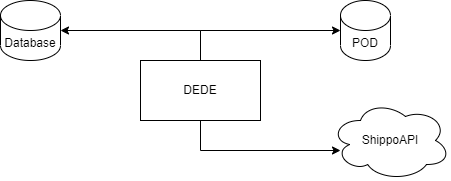
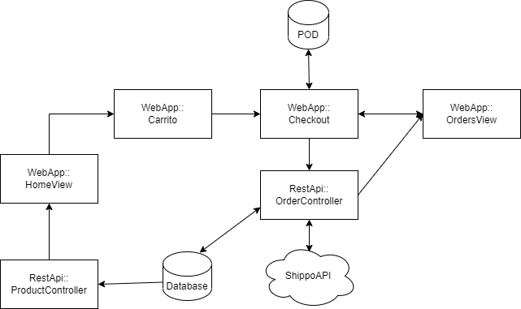
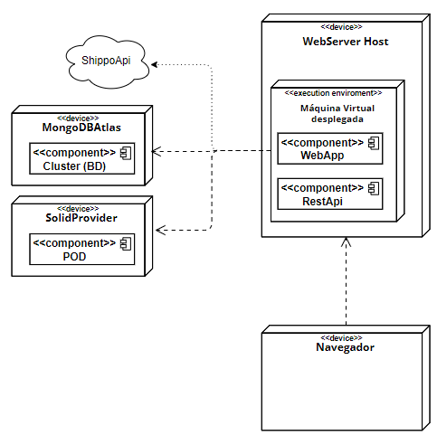
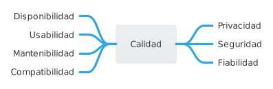

1. Introduction and Goals
Se quiere crear un sistema de venta online que llamaremos DeDe.(Decentralized Delivery) Este sistema, deberá utilizar los principios SOLID para respetar la privacidad de los usuarios.
Para conseguir esto, los clientes tendrán un POD donde guardarán su información personal siempre que los usuarios asi lo autoricen a DeDe.
1.1. Requirements Overview
-
El sistema deberá permitir a los usuarios comprar productos de manera online.
-
Cuando se cree un pedido, el sistema calculará el coste de envío teniendo en cuenta la dirección del usuario almacenada en su pod y la distancia al centro de distribución.
-
DeDe mostrará el precio final del pedido y una vez que el cliente decida comprarlo, se registrará el movimiento y se procederá al envío correspondiente.
-
El sistema permitirá a los usuarios ver los pedidos realizados.
-
La aplicación deberá estar implementada utilizando React y Typescript
-
El sistema debe ser desplegado en contenedores y servicios en la nube.
1.2. Objetivos de calidad
Tabla 1: Objetivos de Calidad
| Objetivo | Detalles |
|---|---|
Privacidad |
El objetivo primordial del sistema será guardar la privacidad del usuario. Basándose en SOLID, la información que se almacene en base de datos y se muestre será siempre la autorizada por el cliente y la mínima para asegurar el funcionamiento de la aplicación. |
Usabilidad |
El uso de la aplicación debe resultar un proceso intuitivo y sencillo para el usuario final. |
Rendimiento |
Habrá de garantizar la máxima rapidez a la hora de responder a las interacciones del usuario. |
Mantenibilidad |
La arquitectura de la aplicación debe permitir añadir o modificar la funcionalidad de la misma con el menor número posible de cambios. |
Testeabilidad |
_DeDe estará sometido a una serie de pruebas unitarias que se realizan de forma automática en el servidor para asegurar el correcto funcionamiento del sistema._Se harán test para la parte de las Restapi y la webapp. Tambien se harán test e2e y de carga. |
1.3. Stakeholders
Los stakeholders o partes interesadas en el sistema se exponen en la siguiente tabla.
Tabla 2: Stakeholders
| Rol | Descripción | Expectativas |
|---|---|---|
Cliente |
Persona u organización que encarga o solicita el desarrollo de la aplicación. (En nuestro caso, serán los profesores de Arquitectura del Software) |
Entrega de especificación al equipo de desarrollo y seguimiento del ciclo de vida de la aplicación con el fin de verificar que se ajusta lo máximo a los requisitos especificados. |
Equipo de Desarrollo |
Conjunto de personas dedicadas a construir, programar y desplegar la aplicación y su arquitectura. (En nuestro caso, el grupo formado en el laboratorio) |
Desarrollo de la aplicación con su correspondiente puesta en funcionamiento, ajustada en la medida de lo posible a los requisitos del cliente. |
Usuario Final |
Conjunto de personas que van a utilizar la aplicación construida. |
Se espera que el usuario final sea capaz de adaptarse al sistema de manera correcta y fluida. |
2. Restricciones de arquitectura
| Restricción | Antecedentes y/o motivación | Typescript |
|---|---|---|
El lenguaje de programación utilizado para desarrollar tanto frontend como backend, aunque combinado con otras tecnologías, es principalmente Typescript. |
React |
La implementación de la parte visual (frontend) de la aplicación se desarrollará con el framework de React. |
Pod´s de SOLID |
Se encargarán del inicio de sesión del usuario así como de gestionar y suministrar los datos del mismo. Garantizan la privacidad de los usuarios. |
GitHub |
Plataforma basada en la web que incorpora las funciones de control de versiones de git. |
Código abierto |
Al trabajar con un repositorio público, se podría consultar y/o sugerir cambios para el proyecto. Tanto la documentación como el código se publican como código abierto. |
| Restricción | Antecedentes y/o motivación | Equipo |
|---|---|---|
El proyecto se desarrolla en un equipo de 3 integrantes llamado dede_es6b. Si hubiera bajas de compañeros, habrá que hacerse cargo de su parte. |
Reuniones |
Como mínimo es obligatorio que tengamos y constemos acta de una reunión semanal en la que discutiremos sobre el reparto del trabajo y los problemas que vayan surgiendo. |
Configuración y control/gestión de versiones |
Repositorio público remoto en Github común para todos los miembros, al que deben subir sus aportaciones para el proyecto. También registrar reuniones, issues, actions… |
Pruebas (Test unitarios, Testting E2E, Gatling) |
Los dos primeros tipos de tests se realizan utilizando jest. Para realizar los tests de carga se utilizará Gatling. |
Integración continua / Entrega continua |
La idea es que cada vez que creemos una nuevo entregable (release) se construya el sistema (restapi y webapi), se ejecuten los tests y se suba el proyecto a GiHub packages. |
| Restricción | Antecedentes y/o motivación | Documentación del proyecto |
|---|---|---|
Basada en la arquitectura arc42. |
Idioma |
Tanto el proyecto como la documentación se harán en español por ser nuestro lenguaje nativo. |
Convenciones de codificación |
El proyecto compila el código a Javascript escrito con el estándar ES5ECMAScript 2009, también conocido como ES5. |
TSC |
3. Ámbito y contexto del sistema
3.1. Contexto de negocio
DeDe solo almacena datos que no sean privados. Es decir, los datos personales del usuario se reservan únicamente para el POD del usuario. El resto de información se almacenará en una base de datos MongoDB.
| Elemento de comunicación | Entrada | Salida |
|---|---|---|
Usuario |
El usuario recibirá una respuesta de la aplicación a través del dispositivo que esté utilizando para acceder a la web |
El usuario interactuará constantemente con la aplicación. También es el responsable de la creación y gestión de su POD de Solid. |
DeDe |
La aplicación recibirá peticiones por parte del usuario e información del POD y MongoDB. |
La aplicación enviará respuestas al usuario y solicitudes al POD y la base de datos. |
Solid POD |
El usuario creará su POD para que nuestra aplicación tenga acceso a su información personal |
El POD solo compartirá información si el usuario ha sido autentificado. |
MongoDB |
La base de datos aceptará peticiones de la aplicación |
La base de datos responderá a la aplicación con los datos solicitados. |
Shippo API |
La API recibirá la dirección de envío seleccionada en la aplicación |
Enviará información (gastos de envío, tiempo de entrega…) correspondiente a la dirección enviada |
3.2. Contexto Técnico
| Tecnología utilizada | Descripción |
|---|---|
SOLID |
Es una especificación que permite a los usuarios almacenar sus datos de forma segura en Pods. |
Pod |
Los pods son unidades de almacenamiento web personales seguras. Un usuario almacena sus datos en un Pod y puede controlar qué personas/aplicaciones pueden acceder a ellos. |
TypeScript |
Es el lenguaje de programación de código abierto que utilizaremos en nuestra aplicación. |
React |
Es una biblioteca de JavaScript, también de código abierto, que utilizaremos para crear las interfaces de nuestra aplicación. |
MongoDB |
Sistema de base de datos NoSQL, orientado a documentos que utilizaremos en la aplicación. |
4. Estrategia de solución
4.1. Decisiones de tecnología
Las tecnologías que hemos decidido utilizar para el desarrollo de la aplicación son:
GitHub → Restricción. Es una plataforma de control de versiones Git.
React → Restricción. Para el desarrollo de la interfaz con TypeScript.
Node.js → Restricción. Para la gestión de múltiples conexiones simultáneas.
Typescript → Restricción. Como lenguaje de programación.
PODs → Servidores web personales seguros para los datos del usuario.
MongoDB → Para la base de datos, no SQL, que contendrá la información sobre productos y envíos.
AWS → Es una colección de servicios de computación en la nube pública que en conjunto forman una plataforma de computación en la nube. La usamos para el despliegue de nuestra aplicación.
API GoShippo → API para gestionar el envío de un pedido: costes, fecha de entrega y URL de seguimiento.
4.2. Decisiones de cómo alcancar objetivos de calidad.
-
Para la usabilidad, intentaremos que la interfaz de nuestra aplicación sea lo más intuitiva posible, de manera que cualquier usuario, nuevo o antiguo, sepa navegar a través de ella con facilidad.
-
Para la privacidad, utilizaremos los PODs del usuario para obtener los datos necesarios. De esta manera ninguna información personal quedará guardada en nuestra base de datos.
-
Para la seguridad, realizaremos tests para evitar cualquier posible error que desemboque en una vulnerabilidad.
4.3. Decisiones de organización
Las reuniones de equipo se harán a través de Microsoft Teams, aparte de la reunión semanal que transcurre en el aula. Durante estas, organizaremos y asignaremos las distintas tareas con la ayuda de las herramientras proporcionadas por GitHub.
5. Vista de bloques
5.1. Sistema general de caja blanca

5.2. Nivel 1

5.2.1. Caja negra : Dede
| Name | Responsibility |
|---|---|
Dede |
Aplicación, servicio web, tienda de ropa. |
5.2.2. Cajas blancas
| Name | Responsibility |
|---|---|
Database |
Almacenamiento de datos e información (productos, pedidos…) |
POD |
Almacén y recuperación de datos del usuario cumpliendo SOLID. |
ShippoAPI |
Cácluclo de gastos de envío, entrega estimada, etc. |
5.3. Nivel 2

5.3.1. Caja blanca : Dede
Este diagrama contiene en detalle lo que abarca la caja negra Dede.
| Name | Responsibility |
|---|---|
WebApp |
Se encarga de la comunicación del usuario con la aplicación. |
RestApi |
Conecta la gestión de datos con la interacción del usuario |
5.4. Nivel 3

5.4.1. Caja blanca: WebApp
En este apartado, se explicarán las interfaces principales de usaurio pertenecientes a la webapp.
| Name | Responsibility |
|---|---|
HomeView |
Muestra al usuario los productos disponibles, con la posibilidad de añadirlos al carrito |
Carrito |
Muestra los productos añadidos al mismo y permite iniciar el proceso de compra |
Checkout |
Proceso de compra. Se conecta con el POD para utilizar una dirección de envío y con el OrderController para guardar el pedido en caso de que se realice con éxito |
Pedidos |
Vista en la que el usuario puede ver su historial de pedidos |
5.4.2. Caja blanca: RestApi
Ahora, se desglosará el contenido de la restapi de la aplicación.
| Name | Responsibility |
|---|---|
ProductController |
Se comunica con la base de datos y se encarga de envíar y filtrar(en caso necesario) los productos de la home view |
OrderController |
Se encarga de almacenar aquellos pedidos finalizados por el usuario, además de la conexión con Shippo para calcular gastos de envío. |
5.4.3. Caja blanca: POD
Gestiona los datos del usuario con librerías y principios SOLID, utilizando el POD del usuario para obtener datos como su dirección.
5.4.4. Caja blanca: Database
Gestiona los datos persistentes de la aplicación: productos, pedidos, etc.
5.4.5. Caja blanca: ShippoAPI
Gestiona las transacciones relacionadas con los pedidos.
6. Vista de ejecución
6.1. Usuario se registra o inicia sesión
Un usuario inicia sesión o se registra en la aplicación. Desde un POD.
6.2. Usuario filtra los productos
Búsqueda de artículos mediante los filtros proporcionados por la aplicación. Este caso simula que el usuario quiere ver las sudaderas.

6.3. Usuario logueado realiza un pedido
Un usuario que está en sesión realiza un pedido. Para ello añade los productos al carrito, selecciona una de sus direcciones alamacenadas en el pod, inserta datos de la tarjeta y una API de shippment se encarga de calcular los gatos de envío, la fecha de entrega y la URL para que el usuario pueda seguir su pedido. Antes de confirmarlo se le mostrarán al usuario todos los datos, precios, fechas, etc.
6.4. Usuario se loguea para ver sus pedidos
El cliente inicia sesión para ver el listado de pedidos que ha realizado.
7. Vista de Despliegue
7.1. Infraestructura nivel 1

- Motivation
-
La motivación detrás de esta estructura de despligue es el conocimiento total de cómo los diferentes componentes de la aplicación se relacionan entre sí en tiempo de ejecución.
- Quality and/or Performance Features
-
El rendimiento de la aplicación depende en su mayoría del servidor en el que está desplegada y de la conexión a internet del cliente. Ya que no tenemos control sobre ninguna de esas dos cosas, intentamos siempre que nuestro código sea lo más eficiente y limpio posible.
- Mapping of Building Blocks to Infrastructure
Componente |
Descripción |
Navegador |
Es el navegador utilizado por el cliente |
WebServer |
Es el servidor en el que está desplegada nuestra máquina virtual |
WebApp |
Nuestra webapp. |
RestApi |
Nuestra RestApi |
MongoDBAtlas |
Es el servicio que proporciona un servidor para nuestra base de datos |
Cluster |
Contenedor donde se encuentra nuestra base de datos en la nube |
SolidProvider |
Es el proveedor de POD utilizado por el cliente |
POD |
Componente al que accede nuestra webapp para la lectura de información |
ShippoAPI |
API utilizada para los envíos |
8. Conceptos cross-cutting
This section describes overall, principal regulations and solution ideas that are relevant in multiple parts (= cross-cutting) of your system. Such concepts are often related to multiple building blocks. They can include many different topics, such as
-
domain models
-
architecture patterns or design patterns
-
rules for using specific technology
-
principal, often technical decisions of overall decisions
-
implementation rules
Concepts form the basis for conceptual integrity (consistency, homogeneity) of the architecture. Thus, they are an important contribution to achieve inner qualities of your system.
Some of these concepts cannot be assigned to individual building blocks (e.g. security or safety). This is the place in the template that we provided for a cohesive specification of such concepts.
The form can be varied:
-
concept papers with any kind of structure
-
cross-cutting model excerpts or scenarios using notations of the architecture views
-
sample implementations, especially for technical concepts
-
reference to typical usage of standard frameworks (e.g. using Hibernate for object/relational mapping)
A potential (but not mandatory) structure for this section could be:
-
Domain concepts
-
User Experience concepts (UX)
-
Safety and security concepts
-
Architecture and design patterns
-
"Under-the-hood"
-
development concepts
-
operational concepts
Note: it might be difficult to assign individual concepts to one specific topic on this list.

8.1. Modelo de dominio

| Nombre | Descripción |
|---|---|
Pedido |
Un pedido contiene una lista de productos que han sido comprados, así como el webId del comprador, un link para poder seguir su estado y un identificador único. |
Producto |
Un producto contiene un identificador único, un color, una talla, se encuentra dentro de una categoría, y un precio de venta. También un stock que depende de las ventas. |
Cabe destacar que aunque sean los usuarios los clientes finales de nuestra tienda, no almacenamos datos personales, para fomentar la privacidad.
8.2. Seguridad y Privacidad
La privacidad es el principal elemento de nuestra aplicación. En nuestra base de datos tan solo almacenaremos los pedidos realizados para que los usuarios puedan visualizarlos. Tanto la sesión como la información personal (en nuestro caso, las direcciones de envío) se obtendrán del POD del usuario.
8.3. Experiencia de usuario
La aplicación tiene una interfaz intuitiva y familiar para asegurarnos de que es sencilla de usar para la gran mayoría de los clientes.
8.4. Pruebas
Durante el desarrollo de la aplicación se van realizando pruebas para evitar vulnerabilidades que supongan una amenaza para el usuario y sus datos.
9. Decisiones de diseño
| Decisión | Ventajas | Desventajas |
|---|---|---|
Mongo |
Código abierto, implementación sencilla y gran compatibilidad con Node.js por ser una base de datos no relacional. |
Usa mucha memoria para el almacenamiento de datos. |
Mongoose |
Permite trabajar con mongoDB y typescript de manera muy sencilla y automatizada. |
Tuvimos que aprender a usarla al inicio. |
Idioma español |
Más sencillo y cómodo para todos nosotros por ser la lengua nativa. |
Menos internacional. |
URL para imágenes |
No almacenarlas de manera local, asociamos a cada producto su imagen en la base de datos. |
Necesitan estar publicadas. |
Prog. Funcional |
Código más preciso y más corto. El código se puede testar fácilmente. Código fácilmente verificable. |
La programación recurrente puede dar lugar a errores graves. No se permite el acceso eficiente a grandes cantidades de datos. Los datos no se pueden modificar. |
Material UI |
Permitiía crear nuestros componentes mucho más rápido. Muy documentado. Mejoran el resultado visual de nuestra aplicación y por tanto la experiencia del usuario. |
No permiten la total personalización del diseño. |
API Shippo |
Nos despreocupamos de temas relacionados con el envío como el cálculo de los costes, la fecha de entrega o el seguimiento de los pedidos. |
Instalarla y comprender sus funciones para poder trabajar con ella fue complejo. |
AWS |
Permite desplegar nuestra aplicación. |
No es intuitiva, dio muchos problemas (como protocolo HTTPS), no da una ip estática. |
10. Quality Requirements
En esta sección se incluyen todos los requerimientos de calidad con escenarios de uso. Los requirimientos más relevantes han sido descritos en la sección 1.2.
10.1. Quality Tree

10.2. Quality Scenarios
| Atributo de calidad | Escenario | Prioridad |
|---|---|---|
Privacidad |
Los datos personales del cliente deben ser privados. La aplicación necesita el consentimiento del cliente para manejar dichos datos basándose en SOLID. Esto quiere decir que, por ejemplo, la dirección de envío de un cliente no es almacenada por la aplicación si no que con el consentimiento de este se puede consultar en su pod personal. |
Alta |
Seguridad |
Los datos del cliente deben estar protegidos en todo momento. Nos debemos asegurar de que información como tarjetas de crédito o cualquier dato personal permanezan protegidos frente a posibles ataques, para ello tenemos que minimizar al máximo las vulnerabilidades. |
Alta |
Usabilidad |
La interfaz debe de ser intuitiva y atractiva de cara al cliente ya que esto repercutirá en las ventas finales. |
Alta |
Fiabilidad |
Requisito de calidad relacionado con la integridad y robustez de la aplicación. Esta se programará siguiendo las características ACID para evitar inconsistencias en la base de datos y asegurando que las transacciones o se completan o se abandonan dejando el sistema como estaba previamente. Esto quiere decir que si ocurre algún error, por ejemplo, al realizar el pago el usuario deberá estar informado y se debe volver a un estado consistente. La recuperación de la aplicación ante estos posibles fallos repercute en la confianza del cliente hacia la aplicación. |
Alta |
Mantenibilidad |
La codificación de la aplicación debe de seguir una guía de estilo para facilitar su mantenimiento. De esta manera será más fácil que se pueda incorporar un desarrollador al equipo, realizar modificaciones, solucionar bugs y ejecutar test para comprobar el correcto funcionamiento. |
Media |
Disponibilidad |
Los clientes recibirán los servicios prestados por la aplicación el 95% del tiempo como media a lo largo del año. Se busca maximizar el porcentaje para no perder ventas ni clientes. La aplicación está probada con test de carga para comprobar que no falle bajo un elevado flujo de usuarios. |
Media |
Robustez |
La aplicación deberá encargarse de envolver los posibles errores que puedan surgir, el usuario tiene que estar informado en todo momento. |
Media |
Compatibilidad |
La aplicación deberá de funcionar en múltiples plataformas con el propósito de llegar a un público más amplio. |
Baja-Media |
11. Riesgos y deuda técnica
-
Falta de trabajo por parte de algún/os miembro/s del equipo, y en una situación extrema, el abandono por su parte del equipo.
-
Conocimiento límitado del lenguaje y las herramientas tecnológicas a utilizar para el desarrollo de la aplicación.
-
Poner en riesgo el trabajo de los demás a la hora de mezclar las partes sin el consentimiento de los compañeros.
-
Fallos en la comunicación, tanto en el grupo de desarrollo como con el cliente para entender lo que se nos pide.
-
Mala planificación, o estimaciones poco realistas.
-
No tener un código cohesivo, sin acoplamiento, refactorizado y enfocado al cambio.
-
Falta de tiempo debido a la gran carga de trabajo de cada miembro, lo que conllevó a una ausencia de pruebas de la aplicación que habrían ayudado a mejorar su rendimiento.Además, ciertas funcionalidades que habrían mejorado la experiencia del usuario y que nos habría gustado añadir finalmente no fueron desarrolladas.
En resumen, el desconocimiento inicial por parte de todos los miembros del equipo ya supone deuda técnica, y consideramos que es algo que siempre va a haber en un proyecto. Trataremos de tener la mejor comunicación, esforzarnos y trabajar sobre el código de manera continua y estable, con el fin de reducir lo que podamos esa deuda técnica.
12. Glosario
| Concepto | Explicación |
|---|---|
SOLID |
En nuestro proyecto cuando nos referimos a SOLID hablamos del proyecto de descentralización de datos en la web dirigido por Tim Berners-Lee. No hacemos referencia a los principios SOLID (S - Single Responsibility Principle, O - Open/Closed Principle, L - Liskov Substitution Principle, I - Interface Segregation Principle, D - Dependency Inversion Principle) |
POD |
Contenedor en el que se presenta un conjunto de datos al usuario. Lo usaremos junto con SOLID. |
React |
Es una librería open source de JavaScript para desarrollar interfaces de usuario. |
MongoDB |
Es un sistema de base de datos NoSQL, orientado a documentos y de código abierto. |
Node.js |
Es un entorno en tiempo de ejecución multiplataforma, de código abierto, para la capa del servidor (pero no limitándose a ello) basado en el lenguaje de programación JavaScript. |
Express |
Es el framework web más popular de Node para desarrollo web. |
TypeScript |
Es un lenguaje de programación libre y de código abierto desarrollado y mantenido por Microsoft. Es un superconjunto de JavaScript. |
Arc42 |
Plantilla de documentación para arquitectura de sistemas y de software. En ella se basa nuestra documentación. |
Material UI |
Es un marco front-end de código abierto para componentes React. Se enfoca en proporcionar diseños audaces y nítidos. |
Mongoose |
Proporciona una solución sencilla basada en esquemas para modelar los datos de nuestra base de datos en la aplicación. |
Stakeholder |
Personas, organizaciones, empresas, etc, cualquier entidad intersada o que le afecte el proyecto. |
About arc42
arc42, the Template for documentation of software and system architecture.
By Dr. Gernot Starke, Dr. Peter Hruschka and contributors.
Template Revision: 7.0 EN (based on asciidoc), January 2017
© We acknowledge that this document uses material from the arc 42 architecture template, http://www.arc42.de. Created by Dr. Peter Hruschka & Dr. Gernot Starke.